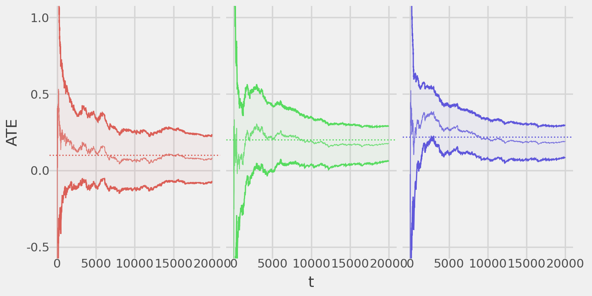
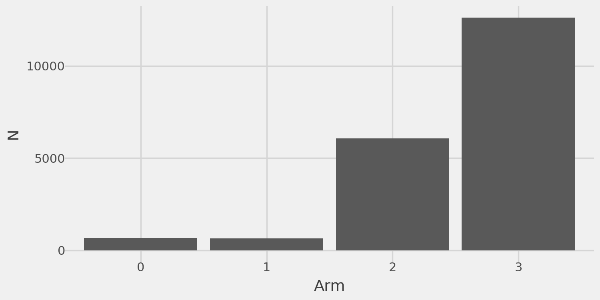
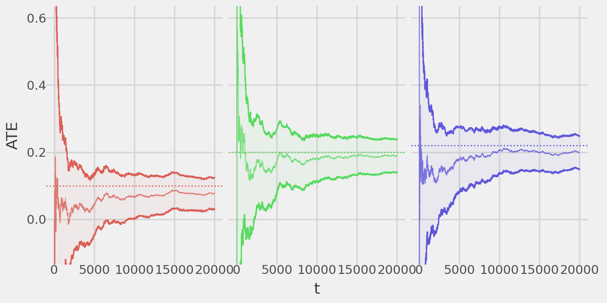

import numpy as np
import pandas as pd
import plotnine as pn
from pyssed import Bandit, MAD
from typing import Callable, Dict
generator = np.random.default_rng(seed=123)pyssed 
The goal of pyssed is to implement the Mixture Adaptive Design (MAD), as proposed by Liang and Bojinov. MAD is an experimental design for multi-armed bandit algorithms that enables anytime-valid inference on the Average Treatment Effect (ATE).
Intuitively, MAD “mixes” any bandit algorithm with a Bernoulli design, where at each time step, the probability of assigning a unit via the Bernoulli design is determined by a user-specified deterministic sequence that can converge to zero. This sequence lets managers directly control the trade-off between regret minimization and inferential precision. Under mild conditions on the rate the sequence converges to zero, [MAD] provides a confidence sequence that is asymptotically anytime-valid and guaranteed to shrink around the true ATE. Hence, when the true ATE converges to a non-zero value, the MAD confidence sequence is guaranteed to exclude zero in finite time. Therefore, the MAD enables managers to stop experiments early while ensuring valid inference, enhancing both the efficiency and reliability of adaptive experiments.
Installation
pyssed can be installed from PyPI with:
pip install pyssedor from GitHub with:
pip install git+https://github.com/dmolitor/pyssedUsage
We’ll simulate an experiment with three treatment arms and one control arm using Thompson Sampling (TS) as the bandit algorithm. We’ll demonstrate how MAD enables unbiased ATE estimation for all treatments while maintaining valid confidence sequences.
First, import the necessary packages:
Treatment arm outcomes
Next, define a function to generate outcomes (rewards) for each experiment arm:
def reward_fn(arm: int) -> float:
values = {
0: generator.binomial(1, 0.5), # Control arm
1: generator.binomial(1, 0.6), # ATE = 0.1
2: generator.binomial(1, 0.7), # ATE = 0.2
3: generator.binomial(1, 0.72), # ATE = 0.22
}
return values[arm]We design the experiment so Arm 1 has a small ATE (0.1), while Arms 2 and 3 have larger ATEs (0.2 and 0.22) that are very similar.
Thompson Sampling bandit
We’ll now implement TS for binary data, modeling each arm’s outcomes as drawn from a Bernoulli with an unknown parameter \(\theta\), where \(\theta\) follows a Beta(\(\alpha\)=1, \(\beta\)=1) prior (a uniform prior).
To use MAD, pyssed requires the bandit algorithm to be a class inheriting from pyssed.Bandit, which requires the bandit class to implement the following key methods:
control(): Returns the control arm index.k(): Returns the number of arms.probabilities(): Computes arm assignment probabilities.reward(arm): Computes the reward for a selected arm.t()Returns the current time step.
For full details, see the pyssed.Bandit documentation.
The following is an example TS implementation:
class TSBernoulli(Bandit):
"""
A class for implementing Thompson Sampling on Bernoulli data
"""
def __init__(self, k: int, control: int, reward: Callable[[int], float]):
self._control = control
self._k = k
self._means = {x: 0. for x in range(k)}
self._params = {x: {"alpha": 1, "beta": 1} for x in range(k)}
self._rewards = {x: [] for x in range(k)}
self._reward_fn = reward
self._t = 1
def control(self) -> int:
return self._control
def k(self) -> int:
return self._k
def probabilities(self) -> Dict[int, float]:
samples = np.column_stack([
np.random.beta(
a=self._params[idx]["alpha"],
b=self._params[idx]["beta"],
size=1000
)
for idx in range(self.k())
])
max_indices = np.argmax(samples, axis=1)
probs = {
idx: np.sum(max_indices == i) / 1000
for i, idx in enumerate(range(self.k()))
}
return probs
def reward(self, arm: int) -> float:
outcome = self._reward_fn(arm)
self._rewards[arm].append(outcome)
if outcome == 1:
self._params[arm]["alpha"] += 1
else:
self._params[arm]["beta"] += 1
self._means[arm] = (
self._params[arm]["alpha"]
/(self._params[arm]["alpha"] + self._params[arm]["beta"])
)
return outcome
def t(self) -> int:
step = self._t
self._t += 1
return stepWith our TS bandit algorithm implemented, we can now wrap it in the MAD experimental design for inference on the ATEs!
The MAD
For our MAD design, we need a function that takes the time step \(t\) and computes a sequence converging to 0. The key requirement is that this sequence must decay slower than \(1/(t^{1/4})\).
Intuitively, a sequence of \(1/t^0 = 1\) corresponds to Bernoulli randomization, while a sequence of \(1/(t^{0.24})\) closely follows the TS assignment policy.
In this example, we use \(1/(t^{0.24})\) as our sequence. Additionally, we estimate 95% confidence sequences, setting our test size \(\alpha=0.05\). We run the experiment for 20,000 iterations (t_star = 20000).
experiment = MAD(
bandit=TSBernoulli(k=4, control=0, reward=reward_fn),
alpha=0.05,
delta=lambda x: 1./(x**0.24),
t_star=int(20e3)
)
experiment.fit(verbose=False)Point estimates and confidence bands
Now, to examine the results we can print a summary of the ATEs and their corresponding confidence sequences at the end of the experiment:
experiment.summary()Treatment effect estimates:
- Arm 1: 0.089 (-0.05951, 0.23723)
- Arm 2: 0.147 (0.02394, 0.2701)
- Arm 3: 0.196 (0.09282, 0.2984)We can also extract this summary into a pandas DataFrame:
experiment.estimates()| arm | ate | lb | ub | |
|---|---|---|---|---|
| 0 | 1 | 0.088862 | -0.059510 | 0.237234 |
| 1 | 2 | 0.147022 | 0.023943 | 0.270102 |
| 2 | 3 | 0.195610 | 0.092817 | 0.298403 |
3 rows × 4 columns
Plotting results
We can also visualize the ATE estimates and confidence sequences for each treatment arm over time.
(
experiment.plot_ate()
+ pn.coord_cartesian(ylim=(-.5, 1.0))
+ pn.geom_hline(
mapping=pn.aes(yintercept="ate", color="factor(arm)"),
data=pd.DataFrame({"arm": [1, 2, 3], "ate": [0.1, 0.2, 0.22]}),
linetype="dotted"
)
+ pn.theme(strip_text=pn.element_blank())
)
The ATE estimates converge toward the ground truth, and the confidence sequences maintain valid coverage!
We can also examine the algorithm’s sample assignment strategy over time.
experiment.plot_sample_assignment()Due to the TS algorithm, most samples go to the optimal Arm 3 and secondary Arm 2, with some random exploration in Arms 0 and 1.
Similarly, we can plot the total sample assignments per arm.
experiment.plot_n()
Equivalence to a completely randomized design
As noted above, setting the time-diminishing sequence \(\delta_t = 1/t^0 = 1\) results in a fully randomized design. We can easily demonstrate this:
exp_bernoulli = MAD(
bandit=TSBernoulli(k=4, control=0, reward=reward_fn),
alpha=0.05,
delta=lambda _: 1.,
t_star=int(20e3)
)
exp_bernoulli.fit(verbose=False)As before, we can plot the convergence of the estimated ATEs to the ground truth:
(
exp_bernoulli.plot_ate()
+ pn.coord_cartesian(ylim=(-.1, 0.6))
+ pn.geom_hline(
mapping=pn.aes(yintercept="ate", color="factor(arm)"),
data=pd.DataFrame({"arm": [1, 2, 3], "ate": [0.1, 0.2, 0.22]}),
linetype="dotted"
)
+ pn.theme(strip_text=pn.element_blank())
)
And we can verify fully random assignment:
exp_bernoulli.plot_n()